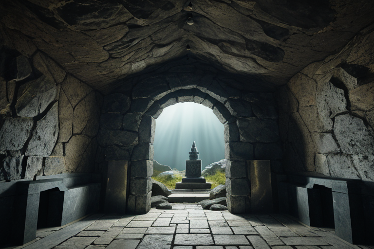
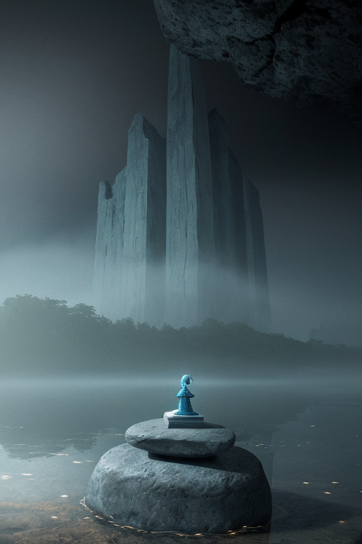
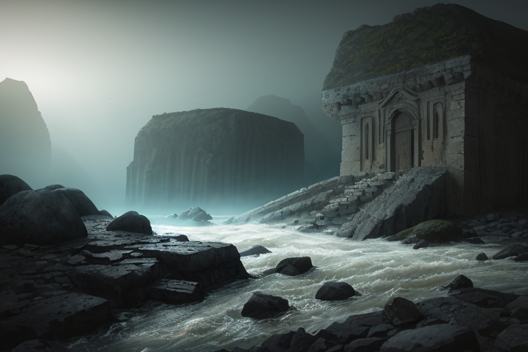
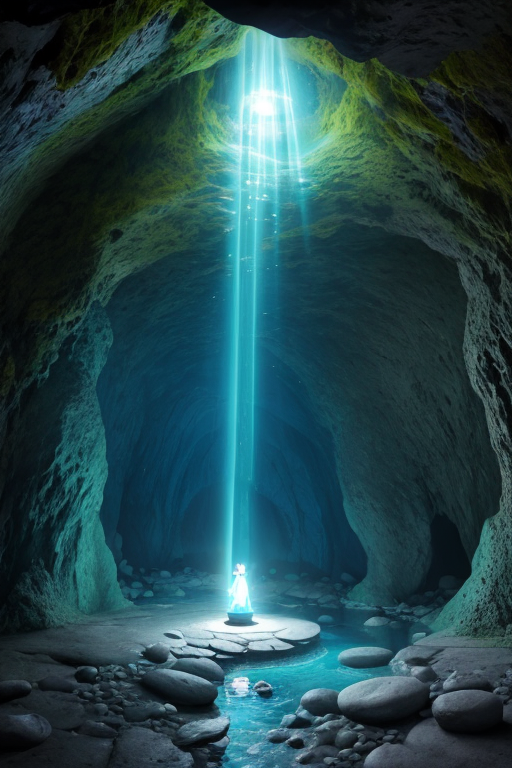
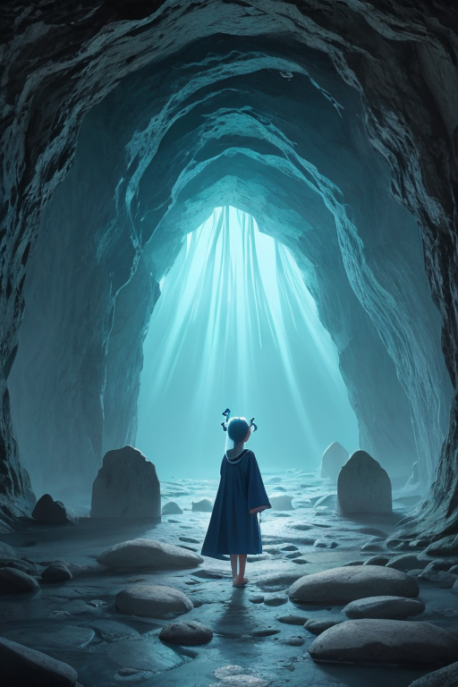

第一章 現実の岩手
あなたはまだ気づいていない。この土地にも、王がいることを。
中尊寺金色堂の闇は深い。外の光を一切遮断したその空間に、千年前の金箔が微かに、しかし確かに輝いている。訪れる者は皆、その静謐に息を呑む。しかしイワティア・ルーンは、その闇の中に別の「重さ」を感じていた。金ではなく、言葉の重さだ。奥州藤原氏が夢見た極楽浄土の物語は、歴史書に記され、語り継がれる。だが、この堂を建てた無名の工匠の唸り、ここで息絶えた名もなき人々の嘆息——それら語られることのなかった物語の断片が、この土地の「歪み」として沈殿している。それは地震の巣となる地殻のひずみとはまた別種の、記憶の圧力だった。
龍泉洞の地下水は、そうした語られざる物語を、無数の鍾乳石のように内側から育て続けていた。洞窟の奥深く、光の届かぬ場所で、何かが静かに結晶化する音がする。それは物理的な音ではない。王にのみ感知できる、土地の「語り」が封じ込められる音だ。三陸の荒波が岩を削るように、語られない物語は現実を浸食し、やがては目に見える亀裂を生む。イワティアは洞窟の入口に佇み、冷たい風に耳を澄ませた。彼の王国「イワティア・ルーン」は、この静謐の底に潜む、膨大な無言の物語の上に成り立っていた。

第二章 歪みの兆候
遠野の里を包む霧が、いつもより濃く、重かった。座敷わらしの噂が途絶えた家では、夜な夜な無縁仏のすすり泣きのような風の音が聞こえるようになった。イワティアは、南部鉄器の急須に注いだ茶の湯気を眺めながら、その報告を聞いていた。主席妖精ルーンティアが、中尊寺金色堂の柱に新たな微細な裂け目を見つけたという。それは物理的な老朽ではなく、そこに込められた「語り」―藤原氏の栄華と滅びの物語―が風化し、その重みを支えきれなくなっている証だった。
「語られぬ物語は、消えるのではなく、澱むのです」とルーンティアは石のように冷たい声で言った。「澱んだ物語は、土地の記憶を腐らせ、歪みを増幅させます」
イワティアの胸中に、深い共感の疼きが走った。彼は自身が、あまりに多くの無言の物語を抱えすぎていることを知っていた。東日本大震災の津波が奪い去った言葉の数々。復興の喧噪に埋もれ、語られる機を失った悲しみや、言い出せなかった感謝。それらはすべて、この岩手の地盤の下で、黒く粘稠な結晶として沈殿していた。そして今、その重みが、古くからの物語の封印をも押し潰そうとしている。龍泉洞の地下湖の水位が、理由なく変動し始めた。静謐の底で、何かが目覚めようとする胎動が、確かにあった。

第三章 王の葛藤
遠野の山あいを流れる川のせせらぎが、いつもより荒々しく聞こえた。イワティア・ルーンは、中尊寺金色堂の闇の中で目を閉じ、地中に沈む無数の「語られなかった物語」の重みを感じていた。震災の津波が奪った言葉。復興の過程で置き去りにされた小さな嘆き。それらはすべて、王国の基盤である古い物語の層を圧迫し、龍泉洞の地下に封じられた古い「力」の封印に、微細な亀裂を生じさせていた。
「語守王よ、このままでは『古碑封』が破られます」
ルーンティアの声は、石のように冷たく、かつ切なかった。
「新たな物語の重みが、古い封印を壊す。しかし、それらの新しい物語を消去することは……この地の人々の記憶そのものを傷つけることに等しい」
王は静かにうなずいた。彼の内側では、二つの義務が激しくせめぎ合っていた。一つは、土地の均衡を守るため、危険な古い力を封じ続けること。もう一つは、この土地に生きる人々が紡いだ、たとえ未完でも痛みを伴う物語でさえ、守り伝えるという彼自身の根源的な使命だ。
「語られずとも、物語は消えない」王は呟いた。「だが、語られる場を失った物語は、重石となる」
浄土ヶ浜の波が岩を打つ音が、彼の決断を促すように響いてきた。封印を維持するか。それとも、新たな物語の流入を許容し、古い力の暴走という危険を冒すか。彼の静謐な心に、初めて激しい葛藤の波が立った。

第四章 妖精との対話
龍泉洞の奥、地下水脈が静かに流れる空間で、ルーンティアが石壁に触れていた。彼女の指先から、かすかな青い光が岩肌の刻文をなぞる。
「この封印は、『語りすぎ』を恐れて生まれました」彼女の声は水音に溶けるように静かだった。「奥州藤原氏の栄華も、平泉の夢も、あまりに強く美しかった。その物語の力が、この土地の歪みを増幅させかねないと、先代の王は判断したのです」
イハトヴァが傍らに現れ、遠野の山々を思わせる影を落とした。「民話も同じです。座敷わらしの伝承が強すぎれば、それは現実を侵す『怪異』となりかねない。だから、ある強度以上の物語は、古碑に封じ、語られる回数と強さを制限してきた」
「しかし」ルーンティアが王を見た。「封印された物語は、語られる場を失い、重くなり続けます。それはやがて、別の歪みとなる。語られない物語は、消えはしない。だが、その重みで土地そのものを沈黙させてしまうかもしれない」
王は洞窟の闇を見つめた。そこには、語られることを渇望する無数の物語の残響が、重石のように堆積していた。

第五章 微調整と余韻
王は龍泉洞の奥、水音さえ吸い込まれる静寂の場に立った。手にしたのは南部鉄器の薄い板。歪みの源である「語られすぎた物語」の余剰な力は、この鉄に写し取られ、冷め、重い工芸品へと変わる。一つ、また一つ。作業は祈りのように静かだった。物語は消えない。だが、その熱を抜き、形を変え、保管することはできる。かつて奥州藤原氏が黄金に願いを封じたように。
代償は王自身が負った。過剰な物語の共感は、彼の内側に沈黇の層を築く。遠野の座敷わらしのように、彼は少しずつ、この土地の「語り手」から「聞き手」へと変容していく。感情を得た代わりに、自らの物語を紡ぐ声を手放しつつあった。
調整は完了した。地震の歪みは一段階緩和され、三陸に迫る津波は、ほんの数秒、遅れた。それは、逃げ惑う人々の背中を、ほんの一押しする程度の微調整でしかない。
王は浄土ヶ浜の白い岩に腰を下ろし、静かな海を見つめた。そこには、語られずとも、消えずに在るものたちの、深く青い余韻がたゆたっていた。
あなたの町にも、王がいる。